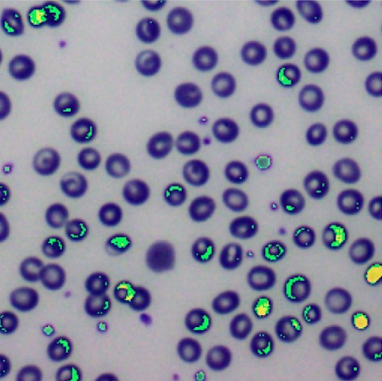
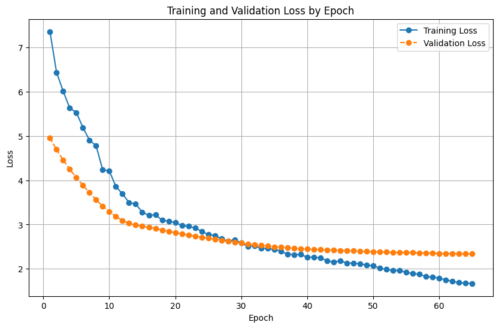

Machine learning, computer vision, and full-stack projects
I worked as part of a group training a neural network to classify images of red blood cells as either healthy or not. My focus was model interpretability — using LIME to understand which pixels actually drove the model's decisions rather than treating it as a black box, so the prediction could be checked against what a person would expect to matter.

LIME saliency map — highlighted regions show which pixels most influenced the model's classification.
A project for a Natural Language Processing class, created a small dataset of labeled data, fine tuned a model and wrote a report. We fine tuned a Flan-T5-small model to take in short legal documents and then produce a summary that anyone can understand. We also created a labeled dataset of legal documents taken from sources like legal_pile on HuggingFace and the summaries we wrote for them. In the end we turned in a final report, in ACL style, and all of our code, data, and our final model.

Training and validation loss by epoch, fine-tuning Flan-T5-small on our legal document summarization dataset.
A full-stack travel planning site I built for a 10-day UK road trip with friends — day-by-day itinerary, an interactive Leaflet.js route map, a packing checklist, and a live budget calculator backed by Firebase Firestore so everyone in the group sees the same real-time totals and can mark items as skipped. Built entirely with modern AI coding tools — Codex, Claude Code, and Cursor — to plan, build, and iterate on the whole thing, from the initial layout through the shared database sync.
I am currently working on an app with a friend that is a gene sequence difference counter. Really it just counts the differences between two strings of equal length. We are implementing computer vision, so you can just point your camera to two gene sequences and it will automatically identify them and count the differences. There are other projects on the way as well.
Through my time at UMBC I learned Python, C/C++, C#, and Ruby. I learned a lot about teamwork and version control. I used GitHub and Jira. I made video games, python and Java apps, webpages, a kernel, learned assembly, learned about algorithms and data structures, linear algebra and GUI. Typical comp sci major things, outside of school projects are on the way. I am currently taking classes in AI/ML, graphics for games, NLP and generative AI
Relevant programming languages and classes:
Graphics for Games (Work in Unreal Engine 5 and C++)
Computer Graphics
Python
C/C++
C#
Introduction to Artificial Intelligence
Introduction to Machine Learning
Natural Language Processing
Software Engineering
Principles of Operating Systems
Design and Analysis of Algorithms
Graphical User Interface Programming
Data Structures
Linear Algebra
I started learning programming in high school, there was an IT/IMP (interactive media production) program. I learned Python, C++, Java, HTML CSS JavaScript, and C# there first. I made a bunch of games in the Unity game engine that are now mostly lost to me. It is where I first learned about version control, web development and algorithms and data structures basics.